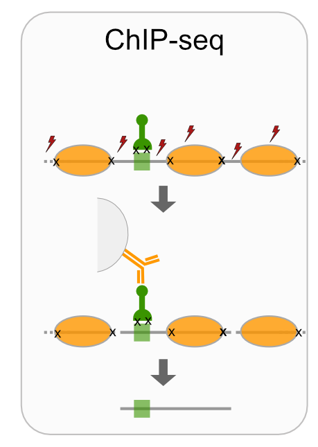
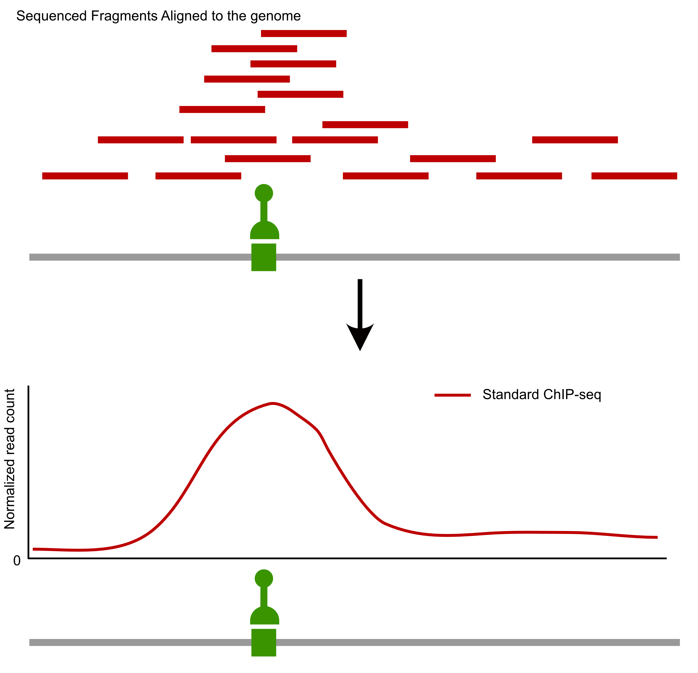
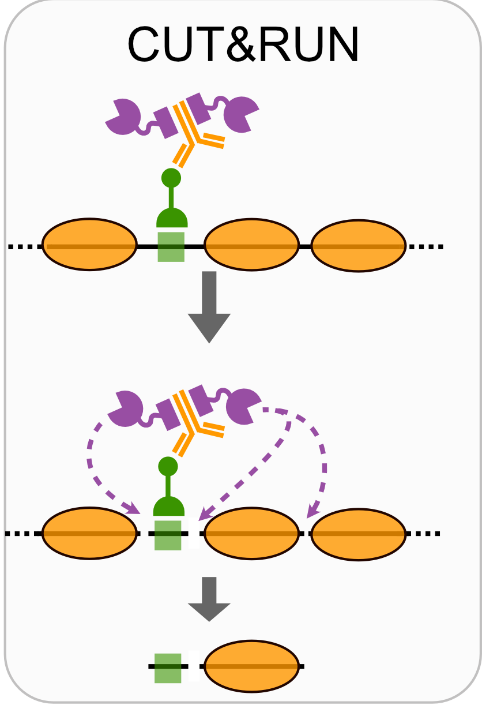
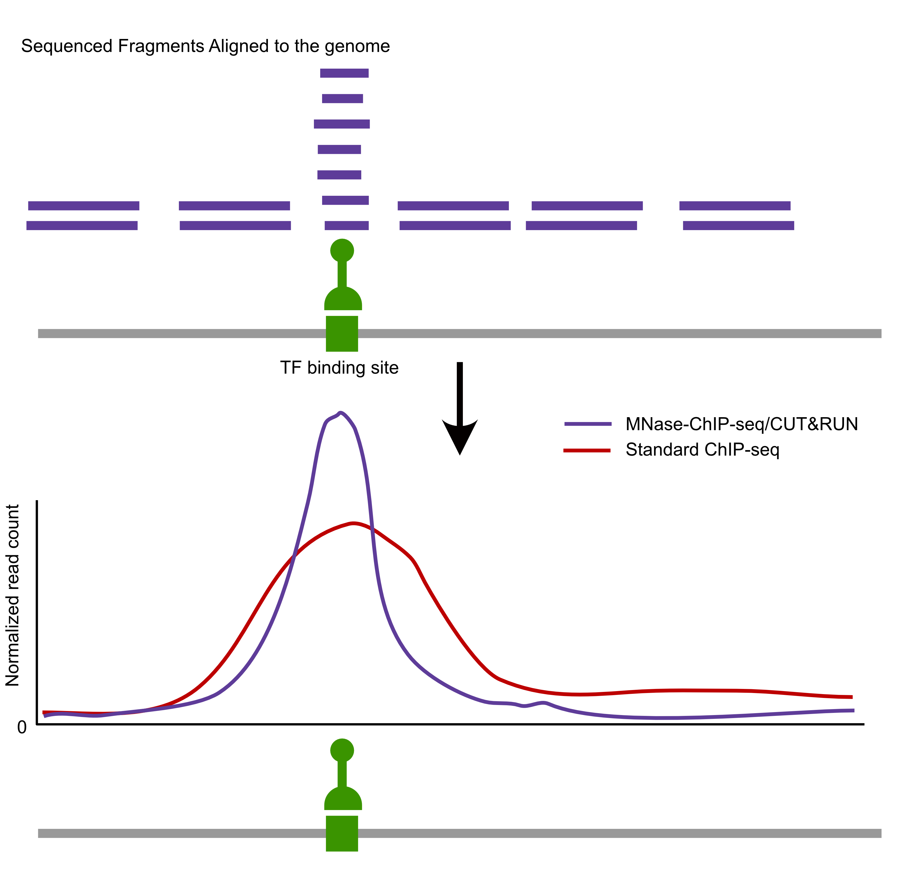
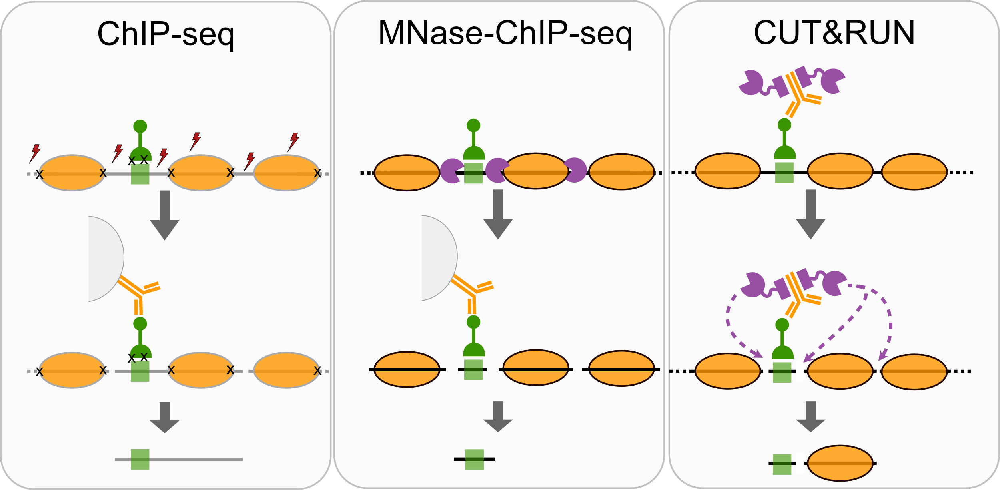
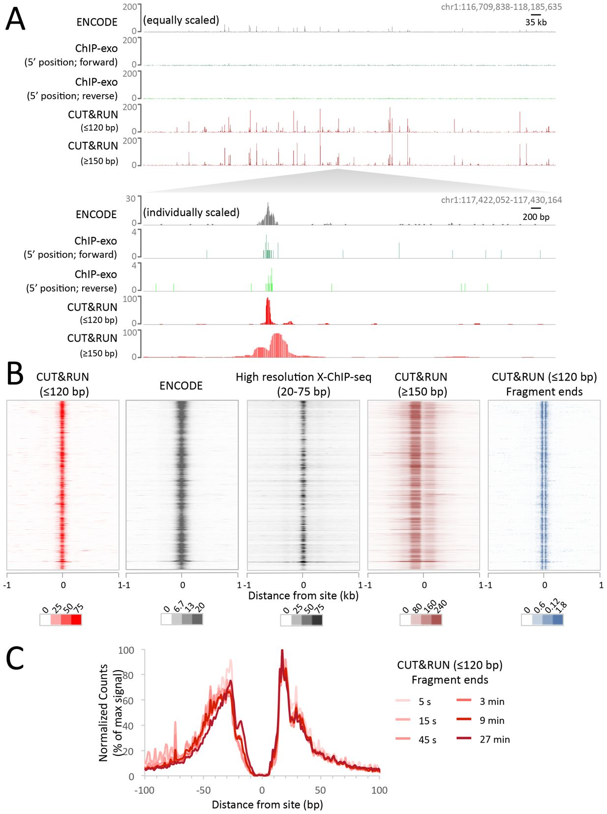

Where do proteins bind in the genome?
What to map and how to map it?
Targets
- Transcription factors
- Histone modifications
- Chromatin remodelers
- RNA polymerases
- Other factors that bind chromatin
Methods
- ChIP-seq
- MNase-ChIP-seq
- CUT&RUN
- CUT&TAG



 {fig-align=“center”}
Comparison of factor-centric methods

| Method | Resolution | Sequencing cost |
|---|---|---|
| ChIP-seq | Low | High |
| MNase-ChIP-seq | High | High |
| CUT&RUN | High | Low |
Workflow
FASTQ files
Adapter trimming
Aligning to the genome
Bed files
- Generate read density genome-wide
Read density (wig/bedgraph)
Call peaks
Meta analysis
Identify motifs
Compare perturbations to control, compare to other datasets
Example data: CTCF CUT&RUN in K562 cells

Example data: CTCF CUT&RUN in K562 cells

(from Skene and Henikoff, eLIFE 2017)
Where do transcription factors bind in the genome?
Today we’ll look at where two yeast transcription factors bind in the genome using CUT&RUN.
Where do transcription factors bind in the genome?
Techniques like CUT&RUN require an affinity reagent (e.g., an antibody) that uniquely recognizes a transcription factor in the cell.
- Antibody is added to permeabilized cells, and the antibody associates with the epitope.
- A separate reagent, a fusion of Protein A (which binds IgG) and micrococcal nuclease (MNase) then associates with the antibody.
- Addition of calcium activates MNase, and nearby DNA is digested.
- These DNA fragments are then isolated and sequenced to identify sites of TF association in the genome.
Where do transcription factors bind in the genome?

Data download and pre-processing
CUT&RUN data were downloaded from the NCBI GEO page for Skene et al.
I selected the 16 second time point for S. cerevisiae Abf1 and Reb1 (note the paper combined data from the 1-32 second time points).
BED files containing mapped DNA fragments were separated by size and converted to bigWig with:
# separate fragments by size
awk '($3 - $2 <= 120)' Abf1.bed > CutRun_Abf1_lt120.bed
awk '($3 - $2 => 150)' Abf1.bed > CutRun_Abf1_gt150.bed
# for each file with the different sizes
bedtools genomecov -i Abf1.bed -g sacCer3.chrom.sizes -bg > Abf1.bg
bedGraphToBigWig Abf1.bg sacCer3.chrom.sizes Abf1.bwThe bigWig files are available here in the data/ directory.
Questions
How do you ensure your antibody recognizes what you think it recognizes? What are important controls for ensuring it recognizes a specific epitope?
What are some good controls for CUT&RUN experiments?
CUT&RUN analysis
Set up libraries
Examine genome coverage
Examine genome coverage
Examine genome coverage
Examine genome coverage
Now that we have tracks loaded, we can make a plot.
Questions
What features stand out in the above tracks? What is different between Reb1 and Abf1? Between the short and long fragments?
Where are the major signals with respect to genes?
Peak calling
A conceptually simple approach to identification of regions containing “peaks” where a transcription factor was bound is available in the MACS software (paper, github). There’s also a nice blog post covering the main ideas.
Theory
The Poisson distribution is a discrete probability distribution of the form:
\[ P_\lambda (X=k) = \frac{ \lambda^k }{ k! * e^{-\lambda} } \]
where \(\lambda\) captures both the mean and variance of the distribution.
The R functions dpois(), ppois(), and rpois() provide access to the density, distribution, and random generation for the Poisson distribution.
Look over the ?dpois documentation.
Theory
Practice
Here, we model read coverage using the Poisson distribution. Given some genome size \(G\) and and a number of reads collected \(N\), we can approximate \(\lambda\) from \(N/G\).
MACS uses this value (the “genomewide” lambda) and also calculates several “local” lambda values to account for variation among genomic regions. We’ll just use the genomewide lambda, which provides a conservative threshold for peak calling.
Using the genomewide lambda, we can use the Poisson distribution to address the question: How surprised should I be to see \(k\) reads at position X?
P-values
Let’s take a look at a plot of the p-value across a chromosome. What do you notice about this plot, when compared to the coverage of the CUT&RUN coverage above?
Peaks
How many peaks are called in this region?
Visualize
Let’s visualize these peaks in the context of genomic CUT&RUN signal. We need to define an AnnotationTrack with the peak intervals, which we can plot against the CUT&RUN coverage we defined above.
Let us load the data:
Visualize
And plot:
Questions
How many peaks were called throughout the genome? How wide are the called peaks, on average?
How else might we define a significance threshold for identifying peaks?
What might the relative heights of the peaks indicate? What types of technical or biological variables might influence peak heights?